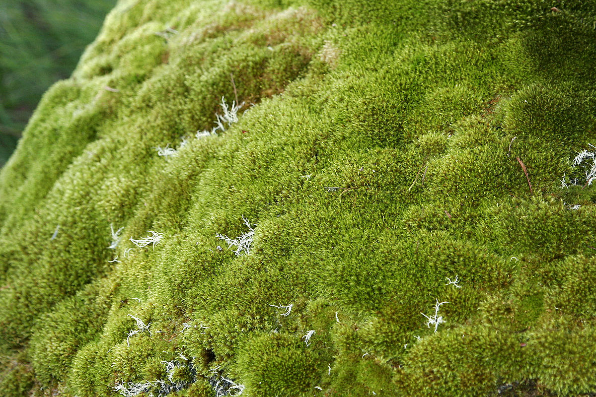
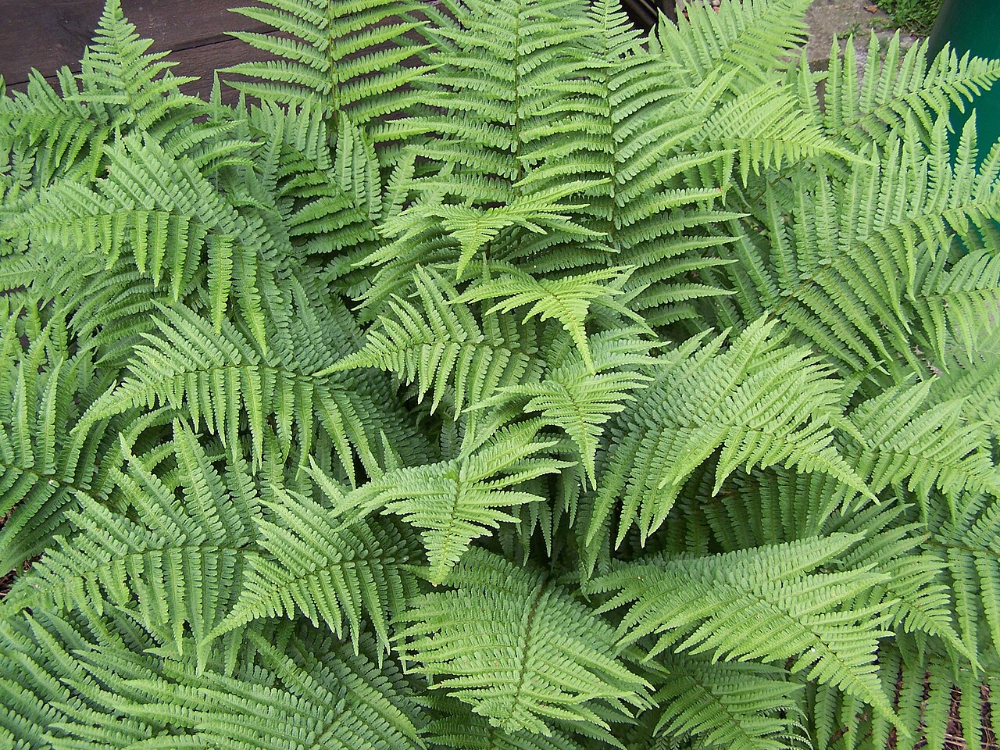
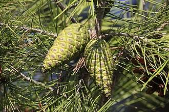
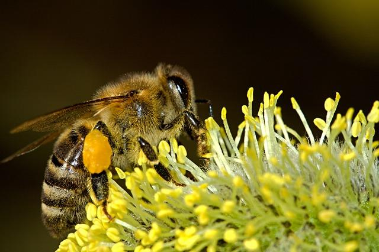

sortir de l’eau = résoudre quatre (04) problèmes

se dessécher
cuticule,
stomates
→

Tenir debout, transporter l’eau
vaisseaux, lignine, racines et feuilles
→

se reproduire sans eau libre
pollen, ovule, graine
→

Protéger et disperser la graine, mieux polliniser